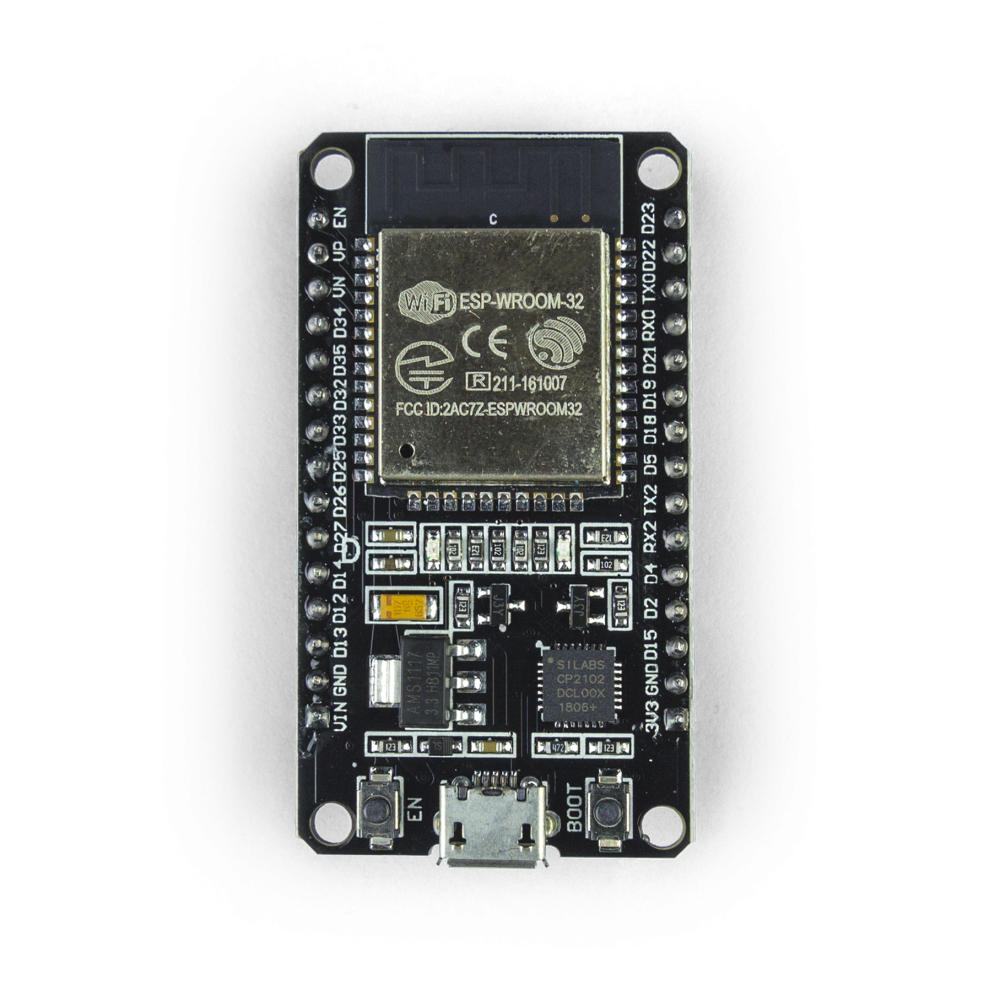

Onde é utilizada?
A ESP32 é muito aplicada em projetos educacionais e de pequeno porte, como automação de iluminação,
controle de dispositivos com relés, semáforos automatizados e sistemas de monitoramento.
O módulo possui dimensões aproximadas de 51 mm x 27,5 mm x 7 mm, sendo compacto
e fácil de integrar em diversas aplicações.
O que é a ESP32?
A ESP32 é um microcontrolador muito utilizado em automação, Internet das Coisas (IoT) e projetos industriais. No nosso projeto, ela é responsável por controlar os sensores e o funcionamento da garra pneumática.

Por que é utilizada?
A ESP32 é amplamente utilizada por sua versatilidade, baixo custo e facilidade de integração com sensores e atuadores. Além disso, seu tamanho compacto e boa capacidade de processamento tornam o dispositivo ideal para protótipos e sistemas embarcados.
Cuidados
Por não ser projetada para ambientes industriais, a ESP32 deve ser manuseada com cuidado, evitando impactos, umidade e exposição a condições inadequadas que possam danificar o componente.